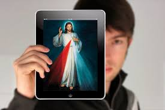

Reflexión Final y Compromiso Cristiano
Las redes sociales son un espacio donde podemos construir o destruir. Cada palabra, cada imagen y cada mensaje deja una huella. Por eso, como cristianos, estamos llamados a iluminar incluso estos ambientes digitales con la verdad, la esperanza y la caridad.
Recordemos lo que nos invita la Iglesia en documentos como Christus Vivit y Fratelli Tutti: ser puentes, no muros; acercar, no dividir; sanar, no herir. La comunicación es un don, pero también una responsabilidad.
Usar bien las redes significa reconocer la dignidad del otro, evitar la agresión, buscar el diálogo y promover un mensaje que edifique. No se trata solo de evitar el mal, sino de comprometerse activamente con el bien.
Tú puedes ser un influencer del Evangelio: alguien que comparte luz, que anima, que respeta, que escucha, que inspira, que construye. No hace falta un millón de seguidores para hacerlo: basta un corazón dispuesto.
